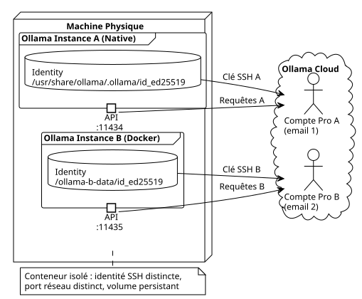

Cumuler Deux Abonnements Ollama Pro sur la Même Machine avec Docker
Publié le 08 May 2026
Deux abonnements Pro, une seule machine, une seule carte bancaire, et zéro conflit réseau. Comment Docker m’a permis de doubler ma capacité d’inférence cloud sans acheter un deuxième PC.
1. Introduction
J’utilise Ollama Pro depuis plusieurs mois pour alimenter mes sessions OpenCode en modèles cloud. Le truc, c’est que même avec un abonnement Pro, on est vite limité par le rate limiting quand on lance plusieurs agents en parallèle. La solution évidente : un deuxième abonnement.
Mais là, c’est le drame.
Ollama identifie chaque machine par une clé SSH unique — sa fameuse Device Key. Deux instances sur le même OS partageraient la même identité, et impossible de lier deux comptes Pro au même device. Et comme vous vous en doutez, je n’allais pas acheter un deuxième laptop juste pour ça.
La solution : tricher. Faire croire à Ollama qu’il tourne sur deux machines différentes, alors qu’elles partagent le même CPU, la même RAM, et la même connexion réseau. Docker va nous offrir une bulle d’isolation parfaite.

2. Pourquoi Deux Fois la Même Chose ?
Avant de me traiter de malade mental, laissez-moi vous expliquer le cas d’usage.
Avec un seul abonnement Pro, je peux lancer un modèle comme deepseek-v4-pro:cloud dans une session OpenCode. Le problème surgit quand je veux deux sessions simultanées. Les quotas de rate limiting font que la deuxième session rame ou est purement rejetée.
Avec deux abonnements Pro indépendants :
* Session OpenCode 1 → Compte Pro A (localhost:11434)
* Session OpenCode 2 → Compte Pro B (localhost:11435)
Chaque session a son propre quota, son propre contexte, et ne gêne pas l’autre. C’est du multi-processing humain.
|
Deux abonnements Pro = deux emails différents. La même carte bancaire fonctionne — le système de paiement Ollama ne bloque pas les souscriptions multiples depuis le même moyen de paiement. J’ai vérifié. |
3. Le Coeur du Problème : La Device Key
Quand vous installez Ollama, une paire de clés SSH ed25519 est générée dans le répertoire d’identité :
$ cat /usr/share/ollama/.ollama/id_ed25519.pub
ssh-ed25519 AAAAC3NzaC1lZDI1NTE5AAAAI...Cette clé est uploadée vers les serveurs d’Ollama lors du ollama signin. C’est elle qui dit « cette machine appartient à tel compte Pro ». Si vos deux instances partagent le même fichier id_ed25519, elles partagent la même identité. Fin du game.
La parade : donner à notre deuxième instance son propre répertoire d’identité, isolé dans un volume Docker.
4. Mise en Place — Étape par Étape
4.1. Prérequis
-
Une installation native d’Ollama fonctionnelle (script officiel
curl | sh) -
Docker installé et fonctionnel
-
Portainer ou docker-compose pour le déploiement
-
Deux comptes Ollama avec deux emails distincts
J’ai utilisé la version 0.20.2 — celle fournie par le script officiel et l’image Docker correspondante.
4.2. Étape 1 : Créer le Volume
Un simple répertoire sur l’hôte servira de volume persistant pour l’identité de l’instance B :
mkdir -p ~/ollama-b-dataCe dossier sera monté dans le conteneur Docker comme /root/.ollama, là où Ollama stocke ses clés d’identité, son historique et ses modèles.
4.3. Étape 2 : Lancer le Conteneur Docker
# docker-compose.yml
services:
ollama-instance-b:
image: ollama/ollama:0.20.2
container_name: ollama-instance-b
ports:
- "11435:11434"
volumes:
- /home/cheroliv/ollama-b-data:/root/.ollama
environment:
- OLLAMA_HOST=0.0.0.0
restart: alwaysCe qui se passe ici :
* Le port 11435 de l’hôte est mappé sur le 11434 interne du conteneur. Ainsi, l’instance Docker écoute sur :11435 sans conflit avec l’instance native qui squatte :11434.
* Le volume ~/ollama-b-data est monté sur /root/.ollama — c’est là que l’identité SSH sera stockée.
* OLLAMA_HOST=0.0.0.0 permet au conteneur d’accepter des connexions externes.
J’ai déployé cette stack via Portainer, mais un simple docker compose up -d fonctionne tout aussi bien.
4.4. Étape 3 : Récupérer la Clé Publique
Le conteneur étant vierge au premier démarrage, Ollama génère automatiquement une nouvelle paire de clés SSH dans le volume. On récupère la clé publique :
$ docker exec ollama-instance-b cat /root/.ollama/id_ed25519.pub
ssh-ed25519 AAAAC3NzaC1lZDI1NTE5AAAAIDDQ+dvnfmuo49q5O8LOlvgZ39SKORFw47ry9k4H2jPcJe vérifie que cette clé est différente de celle de l’instance native :
# Instance native
$ cat /usr/share/ollama/.ollama/id_ed25519.pub
ssh-ed25519 AAAAC3NzaC1lZDI1NTE5AAAAIGyF...(différente)
# Instance Docker
$ cat ~/ollama-b-data/id_ed25519.pub
ssh-ed25519 AAAAC3NzaC1lZDI1NTE5AAAAIDDQ...(différente)Deux clés distinctes, deux identités séparées. Le tour est joué.
|
Si votre conteneur redémarre, il réutilise les clés présentes dans le volume. L’identité est persistante. Vous ne perdrez pas l’association avec le compte Pro. |
4.5. Étape 4 : Enregistrer la Clé sur Ollama.com
Direction https://ollama.com/settings/keys → Add SSH Key. On colle la clé publique de l’instance Docker et on valide.
Ensuite, on lie cette identité au compte Pro B :
$ docker exec -it ollama-instance-b ollama signinLe navigateur s’ouvre, on se connecte avec l’email du compte B, et le token est associé à la clé SSH du conteneur. On vérifie que tout est OK :
$ docker exec -it ollama-instance-b ollama signin
User: cherolivpro4.6. Étape 5 : Tester avec un Petit Modèle Gratuit
Avant de balancer le prix d’un abonnement Pro, je veux être certain que le tuyau fonctionne. Je pull un petit modèle local et gratuit pour valider la connectivité :
$ docker exec ollama-instance-b ollama pull qwen3:0.6b
pulling manifest
pulling 7f4030143c1c: 100% ▕██████████████████▏ 522 MB
success
$ curl -s http://localhost:11435/api/tags
{"models":[{"name":"qwen3:0.6b","model":"qwen3:0.6b",...}]}Le port 11435 répond, le modèle est servi. L’instance B est vivante.
Une fois rassuré, je passe au pull du vrai modèle cloud Pro :
$ docker exec ollama-instance-b ollama pull deepseek-v4-pro:cloud
pulling manifest
pulling 31c3059e137e: 100% ▕██████████████████▏ 344 B
success344 octets pour le manifeste d’un modèle cloud — normal, l’inférence se fait côté serveur, pas en local. Et voilà le test ultime :
$ curl -s http://localhost:11435/v1/chat/completions \
-H "Content-Type: application/json" \
-d '{"model":"deepseek-v4-pro:cloud","messages":[{"role":"user","content":"Dis bonjour en une phrase courte."}]}'
{
"id": "chatcmpl-480",
"model": "deepseek-v4-pro",
"choices": [{
"message": { "content": "Bonjour !" },
"finish_reason": "stop"
}],
"usage": { "total_tokens": 181 }
}Bonjour à toi aussi, instance B.
5. Le Piège de l’API /v1/models
J’ai perdu 20 minutes sur un détail idiot. Quand j’ai configuré le provider ollama-b dans OpenCode, rien n’apparaissait dans le sélecteur de modèles. Rien. Que dalle.
La raison ? L’API /v1/models de l’instance B retournait {"object":"list","data":null} au lieu de {"object":"list","data":[]} quand aucun modèle n’était pullé. La valeur null faisait planter le parsing côté OpenCode, qui n’affichait pas le provider.
La solution : déclarer les modèles explicitement dans la configuration OpenCode plutôt que de compter sur la découverte dynamique.
{
"$schema": "https://opencode.ai/config.json",
"provider": {
"ollama": {
"npm": "@ai-sdk/openai-compatible",
"name": "Ollama (local)",
"options": { "baseURL": "http://localhost:11434/v1" },
"models": {
"gemma4:e2b": { "name": "Gemma 4 E2B (local)" }
}
},
"ollama-b": {
"npm": "@ai-sdk/openai-compatible",
"name": "Ollama Instance B (Docker)",
"options": { "baseURL": "http://localhost:11435/v1" },
"models": {
"qwen3:0.6b": { "name": "Qwen3 0.6B (B)" },
"deepseek-v4-pro:cloud": { "name": "DeepSeek V4 Pro (B)" }
}
}
}
}Avec cette déclaration explicite, OpenCode voit immédiatement le provider B et ses modèles. Un redémarrage de session, et le sélecteur /models affiche les deux instances côte à côte.
|
Si vous ne voyez pas votre provider custom dans |
6. Résultat : Deux Sessions, Deux Comptes, Zéro Conflit
Au final, je peux lancer deux sessions OpenCode simultanément :
Session 1 → /models → Ollama (local) → deepseek-v4-pro:cloud → Compte A
Session 2 → /models → Ollama Instance B (Docker) → deepseek-v4-pro:cloud → Compte BChaque session a son propre quota, son propre rate limit, et ne se marche pas sur les pieds. Même machine, même carte bleue, deux emails différents.
Et le meilleur ? Le conteneur Docker est en restart: always. Il survit aux reboots du système sans intervention manuelle.
7. Leçons Apprises
-
Docker isole tout, même l’identité — Un simple bind mount de volume suffit à donner à un conteneur son propre jeu de clés SSH, le rendant indistinguable d’une machine physique différente aux yeux d’Ollama.
-
Deux emails, même CB — Ollama ne bloque pas les souscriptions multiples depuis le même moyen de paiement. Seul l’email doit être distinct.
-
Tester gratuit avant de payer — Un
ollama pull qwen3:0.6b(modèle libre, 522 Mo) permet de valider toute la chaîne réseau sans débourser un centime. Vous validez le plomberie d’abord, vous activez le Pro ensuite. -
/v1/modelsavecdata: nullcasse OpenCode — Si vous configurez un provider custom avec"models": {}, OpenCode tente de découvrir les modèles via l’API. Si l’API réponddata: null, le provider n’apparaît pas. Déclarez les modèles explicitement. -
Deux comptes, c’est du multi-processing humain — Un compte Pro = une session OpenCode active. Deux comptes = deux sessions parallèles. Pour quelqu’un qui jongle entre plusieurs projets Gradle en simultané, c’est un game changer.